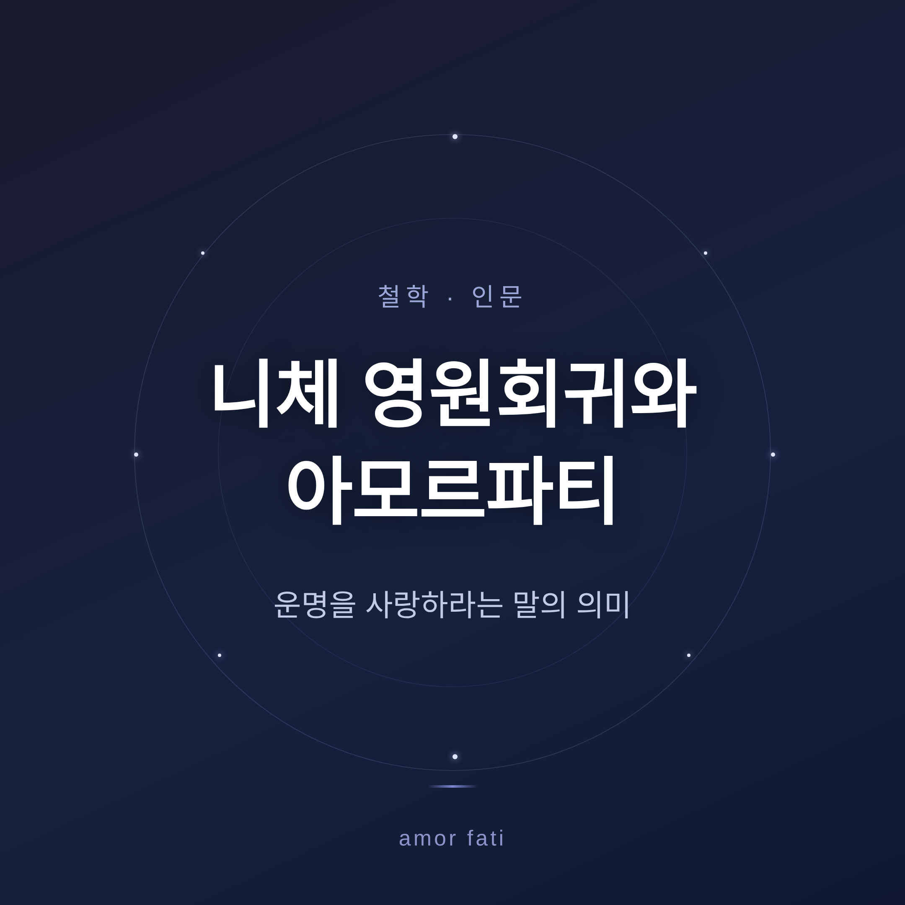
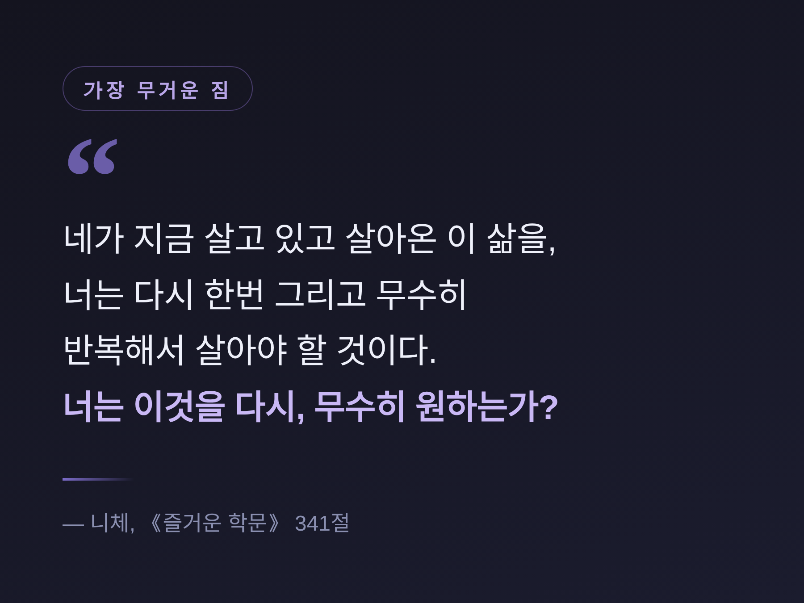
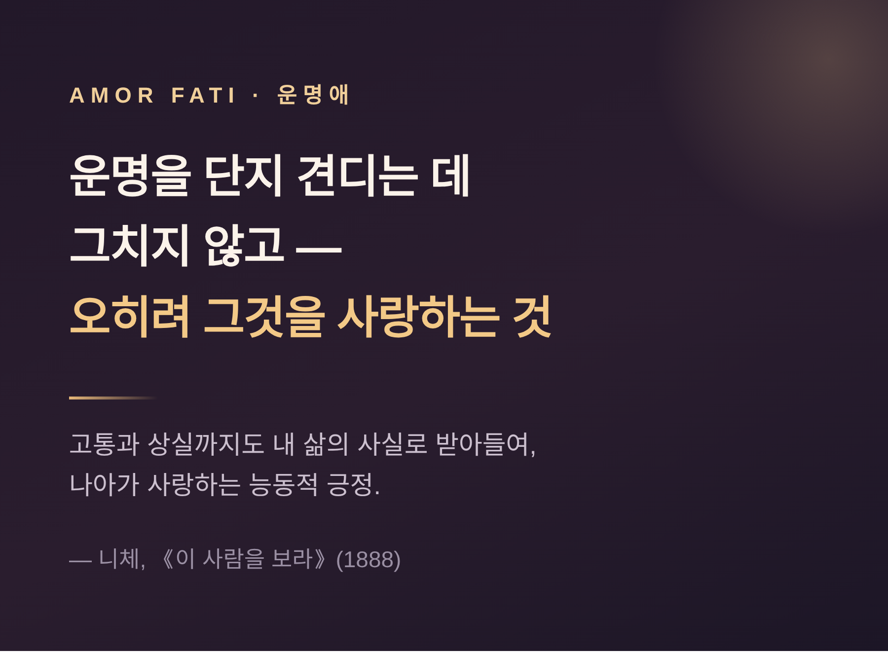

니체 영원회귀와 아모르파티 — 운명을 사랑하라는 말의 의미
세 줄 요약
영원회귀는 "이 삶을 똑같이 무한히 반복해도 좋은가"를 묻는 니체의 사상입니다.
아모르파티(운명애)는 그 물음에 "그렇다"고 답하는 삶의 태도, 곧 견딤을 넘어 사랑하는 자세입니다.
오늘은 니체의 영원회귀와 아모르파티를 일반 독자의 눈높이에서 풀어보려 합니다.
어려운 용어는 덜어내고, 한 사람의 물음으로 이야기를 시작하겠습니다.

'신은 죽었다' — 이야기가 시작된 자리
니체의 사상은 '신은 죽었다'에서 출발합니다.
니체는 《즐거운 학문》(1882)에서 적었습니다.
"신은 죽었다. 신은 죽어 있다. 그리고 우리가 그를 죽였다."
가장 유명한 구절은 125절 '광인'에 나옵니다.
흔히 이 말을 무신론의 선언으로 읽습니다.
하지만 니체에게 '신'은 기독교 도덕과 그 형이상학적 세계관의 상징입니다.
유럽에 도덕과 의미와 가치의 토대를 제공해 온 체계를 가리킵니다.
과학과 이성과 근대성이 그 믿음을 더는 신뢰할 수 없게 만들었습니다.
토대가 '살해'되었다는 것은, 곧 문명의 상태에 대한 진단인 셈입니다.
여기서 위기가 따라옵니다.
공유된 도덕 틀과 의미의 구조가 무너지면 삶이 무의미해 보입니다.
모든 가치가 자의적으로 보이고, 절망이 뿌리내리는 허무주의로 빠질 위험이 생깁니다.
니체의 처방은 회피가 아닙니다.
스스로 새로운 가치를 창조하는 "가치의 재평가"입니다.
영원회귀와 아모르파티는 바로 이 허무주의에 대한 응답으로 등장합니다.
어느 밤, 악령의 질문
영원회귀가 출판된 형태로 처음 나온 곳도 《즐거운 학문》입니다.
4권 341절, 제목은 '가장 무거운 짐'.
니체는 이를 자신의 "가장 깊은 사상"으로 여겼습니다.
가장 고독한 어느 밤, 악령 하나가 찾아옵니다.
그리고 속삭입니다.
"네가 지금 살고 있고 살아온 이 삶을 너는 다시 한번, 그리고 무수히 반복해서 살아야 할 것이다. 거기에 새로운 것은 아무것도 없을 것이며, 모든 고통과 모든 기쁨, 모든 생각과 한숨이 같은 순서와 계열로 너에게 되돌아올 것이다."
새로운 것은 없습니다.
모든 고통과 기쁨이 똑같은 순서로 되돌아옵니다.
악령은 끝에 한 가지를 묻습니다.
"너는 이것을 다시, 그리고 무수히 원하는가?"

341절은 자주 간과되는 질문으로 끝납니다.
"이 궁극의 영원한 확인과 봉인보다 더 간절히 갈망하기 위해, 너는 너 자신과 삶에 대해 얼마나 호의적이 되어야 하겠는가?"
핵심은 여기 있습니다.
영원회귀는 우주의 법칙을 가르치는 강의가 아니라 나를 비추는 거울입니다.
"이 삶을 무한히 반복해도 좋다"고 답할 수 있을 만큼, 나는 삶을 긍정하고 있는가.
영원회귀, 어떻게 읽을 것인가 — 갈라지는 해석
여기서 한 가지를 짚고 넘어가야 합니다.
영원회귀를 무엇으로 읽을지를 두고 학계의 견해가 갈립니다.
한쪽으로 단정하지 않고, 양쪽을 함께 적겠습니다.
| 해석 | 무엇으로 보는가 | 근거 |
|---|---|---|
| 우주론적(형이상학적) | 시간과 우주의 실제 사실 | 1881년 노트 등 미발표 유고의 (준)물리적 논증, 폴 로엡 등 |
| 실존적·윤리적 사고실험 | 삶의 태도를 시험하는 장치 | 《즐거운 학문》 341절의 '가정' 형식, 하이데거의 지적, SEP·IEP |
우주론적 해석은 이렇게 봅니다.
시간이 무한하고 에너지와 상태의 수가 유한하다면, 같은 사건의 배열이 무한히 반복될 수밖에 없다는 것.
우주의 끝에서 모든 것이 리부트되어 역사가 그대로 반복된다는 (준)물리적 논증입니다.
사고실험 해석은 다르게 봅니다.
출판된 저작에서 니체는 이를 악령의 가정적 질문으로 제시하지, 사실로 단정하지 않습니다.
하이데거는 《즐거운 학문》의 첫 언급이 사실이 아니라 가설적 질문임을 지적합니다.
"내 삶이 영원히 반복된다면 어떻게 반응할 것인가"로 삶 긍정의 강도를 재는 척도라는 것입니다.
출판 저작만 보면 사고실험 해석이 현대 주류입니다.
다만 미발표 노트의 우주론적 논증을 중시하는 형이상학적 해석도 엄연히 존재합니다.
일부 학자는 니체가 의도적으로 모호함을 남겼다고 봅니다.
사고실험의 힘이, 그것이 사실일 수도 있다는 가능성에서 일부 나온다는 견해입니다.
어느 쪽이 옳다고 못 박지 않는 편이 안전합니다.
목동의 목을 막은 뱀
니체는 《차라투스트라는 이렇게 말했다》(1883–85)에서 이 사상을 한 편의 환영으로 보여줍니다.
그는 영원회귀를 이 책의 "근본 사상"으로 삼습니다.
황량한 절벽 사이, 한 젊은 목동이 쓰러져 있습니다.
무거운 뱀 한 마리가 목구멍으로 기어들어가 그를 질식시킵니다.
차라투스트라는 외칩니다.
"뱀의 대가리를 물어뜯어버리라."
목동은 그렇게 합니다.
대가리를 뱉어내고 벌떡 일어선 그는 더 이상 예전의 그가 아니었습니다.
목구멍의 뱀은 영원회귀가 처음 안기는 공포와 역겨움, 곧 허무주의입니다.
대가리를 물어뜯는 일은 그 공포를 거부하고 넘어서는 결단입니다.
변모한 목동은 반복을 받아들여 다시 태어난 사람의 모습입니다.
니체는 영원회귀를 "도달할 수 있는 가장 높은 형태의 삶에 대한 긍정"이라 불렀습니다.
"그랬었다"를 "내가 그것을 원했노라"로
그렇다면 어떻게 넘어설까요.
니체의 답은 의지의 방향을 바꾸는 데 있습니다.
지난 일은 바꿀 수 없습니다.
이미 "그랬었다"고 끝난 과거입니다.
니체는 이 "그랬었다"를 "그러나 나는 그것을 원했노라!"로 옮기라고 청합니다.
이것은 사후의 변명이 아닙니다.
일어난 일을 깎아내리지 않고 통째로 긍정하는 태도입니다.
의지를 소멸시키는 대신 의지를 확장하는 쪽입니다.
여기서 아모르파티가 등장합니다.
아모르파티 — 견딤을 넘어 사랑하는 일
아모르파티(amor fati)는 라틴어로 '운명에 대한 사랑', 곧 운명애를 뜻합니다.
이 정확한 라틴어 표현은 니체가 19세기에 만든 말입니다.
니체는 마지막 생산적 해였던 1888년, 《이 사람을 보라》에 이렇게 적습니다.
"인간의 위대함에 대한 나의 공식은 아모르파티다. 즉 앞으로도, 뒤로도, 영원토록, 그 어떤 것도 다르기를 바라지 않는 것이다. 필연적인 것을 단지 견디는 데 그치지 않고 — 오히려 그것을 사랑하는 것이다."
여기서 한 가지를 짚고 싶습니다.
아모르파티는 그저 참고 견디는 체념이 아닙니다.
고통과 상실까지도 내 삶의 사실로 받아들여, 나아가 사랑하는 자세입니다.
니체는 우리에게 상처를 주는 것조차 사랑하라고 청합니다.
영원회귀가 시험이라면, 아모르파티는 그 시험을 통과한 사람의 태도입니다.
지나간 괴로움이 영원히 되돌아온다 해도, 단 하나도 다르기를 바라지 않는 것.
니체는 이를 도달할 수 있는 최고의 긍정이라 불렀습니다.
니체는 이를 다짐으로도 선언했습니다.
《즐거운 학문》 276절의 새해 결심입니다.
"나는 사물에서 필연적인 것을 아름다운 것으로 보는 법을 점점 더 배우고 싶다... 아모르파티, 그것이 이제부터 나의 사랑이 되기를."

스토아의 수용과 같은가, 다른가
아모르파티를 두고 또 하나의 물음이 따라옵니다.
이것이 고대 스토아 철학과 같은 것인가 하는 점입니다.
이 역시 한쪽으로 기울이지 않고 적겠습니다.
먼저 공통점입니다.
'운명을 사랑하라'는 발상의 뿌리는 스토아 철학에 있습니다.
마르쿠스 아우렐리우스와 에픽테토스가 그 줄기입니다.
다만 "amor fati"라는 라틴어 표현 자체는 니체가 만들었습니다.
차이도 분명합니다.
스토아는 합리적이고 목적론적으로 질서 잡힌 우주를 전제합니다.
섭리, 곧 '신의 계획' 안에서 운명을 이성적으로 수용합니다.
통제할 수 없는 것은 받아들이고, 통제할 수 있는 것에 집중합니다.
니체는 우주에 목적도 이유도 없음을 인정합니다.
그럼에도 삶을 사랑하며 긍정하라고 말합니다.
'모든 일에는 이유가 있다'는 낙관적 목적론을 그는 거부합니다.
모든 것은 아무 이유 없이 일어나며, 그럼에도 사랑하라는 것입니다.
정리하면 이렇습니다.
스토아는 '질서 있는 우주에 대한 수용', 니체는 '무의미한 혼돈에 대한 능동적 긍정'입니다.
단순한 수용을 넘어선다는 점이 니체의 차별점입니다.
다만 현대에는 두 갈래가 다시 맞닿기도 합니다.
스토아주의, 회복탄력성, 수용전념치료(ACT)와 이어져, 바꿀 수 없는 것과 싸우는 부차적 고통을 거두는 실천으로 응용됩니다.
위버멘쉬와 정신의 세 변화
니체는 이 긍정을 감당할 인간상도 그렸습니다.
위버멘쉬(Übermensch), 곧 초인입니다.
신이 죽고 물려받은 가치가 무너졌을 때, 절망하지 않고 밑바닥에서부터 새로운 가치를 창조하는 인간입니다.
영원회귀는 위버멘쉬가 통과해야 할 궁극의 삶 긍정 시험입니다.
영원회귀를 기꺼이 긍정할 수 있는 자만이 위버멘쉬에 다가설 수 있습니다.
그 성장은 정신의 세 변화로 그려집니다.
- 낙타 — 의무를 짊어진 정신.
- 사자 — 기존 가치에 "아니오"를 말하는 자유.
- 어린아이 — 새로운 가치를 창조하며 "예"라고 긍정하는 놀이.
이 변화의 끝에서 자기 극복의 근본 충동인 '힘에의 의지'가 작동합니다.
니체가 지향한 것은 의지의 소멸이 아니라 의지의 긍정입니다.
무(無)에의 의지가 아니라, 존재와 생성과 창조에의 의지입니다.
결국 남는 물음은 하나입니다.
"이 삶을 다시 살아도 좋은가."
영원회귀가 우주의 사실인지 사고실험인지, 아모르파티가 스토아의 변형인지 니체만의 것인지 — 그 논쟁은 여전히 열려 있습니다.
그러나 그와 무관하게, 오늘 하루를 다시 살아도 좋겠냐고 묻는다면, 망설임 없이 그렇다고 답할 수 있는 하루를 살고 싶습니다.